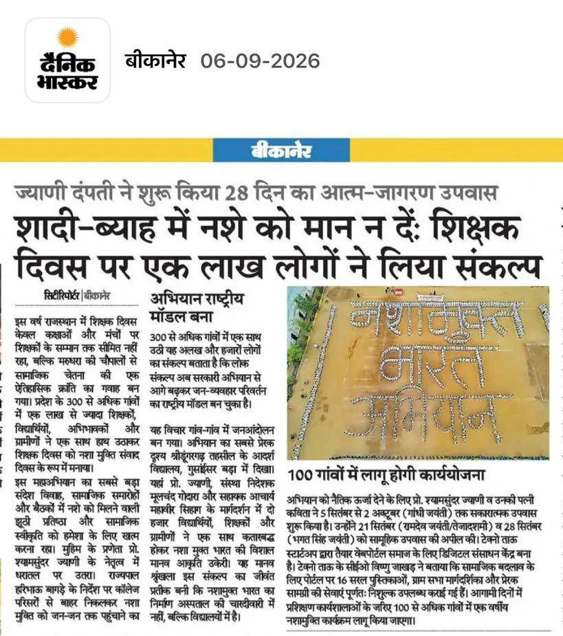
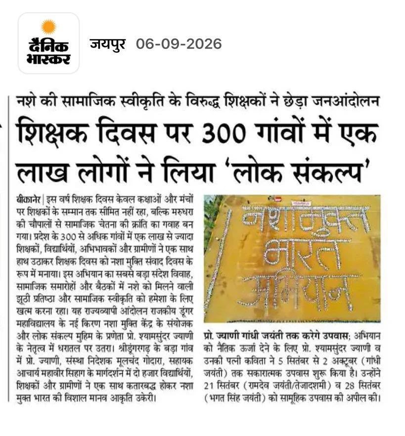
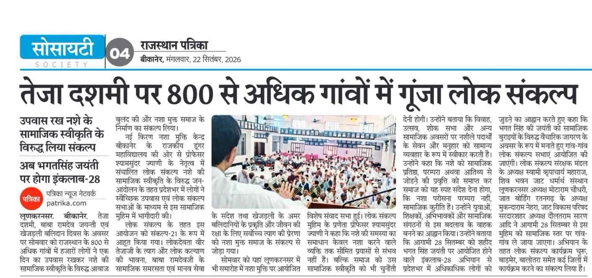
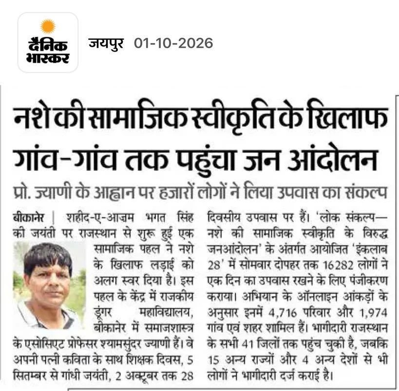
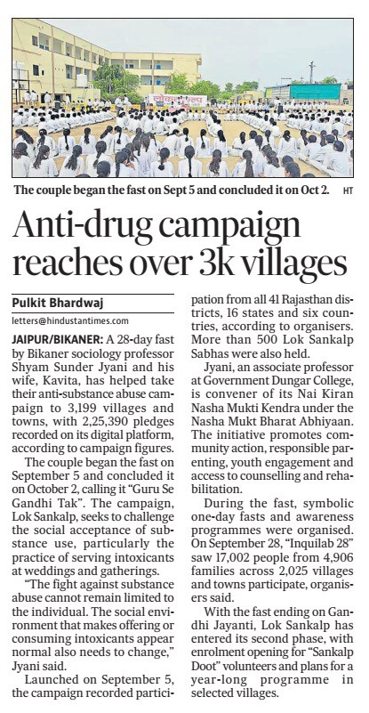
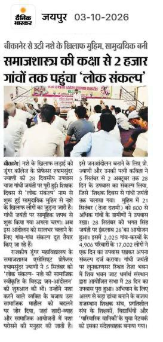
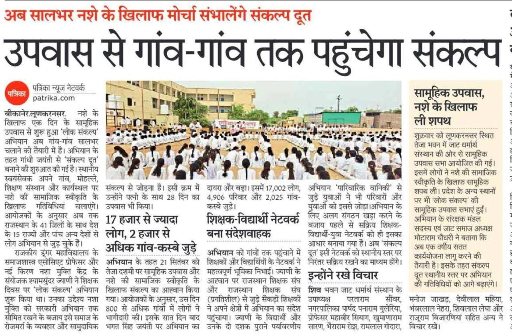

प्रगति एवं पारदर्शिता
लोकसंकल्प डैशबोर्ड
गाँव से राज्य तक, अभियान कहाँ पहुँचा
यहाँ राज्य, जिला, ब्लॉक और गाँव/वार्ड, चारों स्तर की प्रगति दिखेगी।
आँकड़े ग्राम/वार्ड समितियों, शिक्षकों और समन्वयकों द्वारा भेजी गई रिपोर्ट से बनते हैं। जो गाँव रिपोर्ट भेजता है, उसकी मेहनत यहाँ दिखाई देती है। इसलिए हर सभा की रिपोर्ट भेजना ज़रूरी है।
प्रमुख संकेतक सजीव हैं। जिलेवार तालिका अभी नहीं
एक नज़र में
प्रमुख संकेतक
हर संख्या गाँवों से भेजी गई रिपोर्ट से बनती है।
आँकड़े जुड़ रहे हैं…
ये संख्याएँ वेबसाइट पर आए फ़ॉर्म से सीधे गिनी जाती हैं और हर नई प्रविष्टि के साथ बढ़ती हैं। संकल्प की संख्या में दोनों जुड़े हैं : स्वयं फ़ॉर्म भरकर संकल्प लेने वाले, और सभाओं में सामूहिक संकल्प लेने वाले प्रतिभागी।
दशहरा से
नशामुक्त पंचायत चुनाव का संकल्प लेने वाले
गाँव में हुई सभाओं और अपने नाम से लिए गए संकल्प, दोनों इसमें जुड़ते हैं।
तालिका
जिलेवार प्रगति
जिस जिले से प्रविष्टि आई है, वह यहाँ अपने आप जुड़ जाता है।
| जिला | जुड़े गाँव | सभाएँ | समितियाँ | संकल्प |
|---|---|---|---|---|
| आँकड़े जुड़ रहे हैं… | ||||
मीडिया कवरेज
अख़बारों में लोकसंकल्प
अभियान की ख़बरें, जैसी अख़बारों और समाचार पोर्टलों पर छपीं।
5 सितम्बर 2026 · शिक्षक दिवस
300 गाँवों में नशा मुक्ति संवाद दिवस
शिक्षक दिवस पर राजस्थान के 300 से अधिक गाँवों में एक लाख से ज़्यादा शिक्षकों, विद्यार्थियों, अभिभावकों और ग्रामीणों ने एक साथ हाथ उठाकर संकल्प लिया। इसी दिन प्रो. श्यामसुंदर ज्याणी और कविता ज्याणी ने 28 दिन का उपवास आरंभ किया।




21 सितम्बर 2026 · तेजा दशमी
800 से अधिक गाँवों में गूँजा लोकसंकल्प
तेजा दशमी, बाबा रामदेव जयंती और खेजड़ली बलिदान दिवस पर राजस्थान के 800 से अधिक गाँवों में हज़ारों लोगों ने एक दिन का उपवास रखा।


28 सितम्बर 2026 · भगत सिंह जयंती
गाँव-गाँव तक पहुँचा जन आंदोलन
शहीद-ए-आज़म भगत सिंह की जयंती पर आयोजित इंकलाब 28 में 16,282 लोगों ने एक दिन का उपवास रखने के लिए पंजीकरण कराया, जिनमें 4,716 परिवार और 1,974 गाँव एवं शहर शामिल रहे।


2 अक्टूबर 2026 · गांधी जयंती
28 दिन का उपवास पूर्ण, अभियान 3 हज़ार से अधिक गाँवों तक
5 सितम्बर से 2 अक्टूबर तक चला “गुरु से गांधी तक” उपवास पूर्ण हुआ। उस समय तक अभियान 3,199 गाँव-कस्बों तक पहुँच चुका था और मंच पर 2,25,390 संकल्प दर्ज थे।


3 अक्टूबर 2026 के बाद
अब सालभर नशे के ख़िलाफ़ मोर्चा सँभालेंगे संकल्प दूत
उपवास की पूर्णाहुति के बाद अभियान दूसरे चरण में आया। गांधी जयंती से संकल्प दूत बनाने की शुरुआत हुई, जो अपने गाँव, मोहल्ले, शिक्षण संस्थान और कार्यस्थल पर सालभर गतिविधियाँ चलाएँगे।




अपने गाँव या वार्ड का अंक भी इसी तालिका में जोड़ें
रिपोर्ट नहीं भेजी तो गाँव का नाम तालिका में नहीं आएगा।